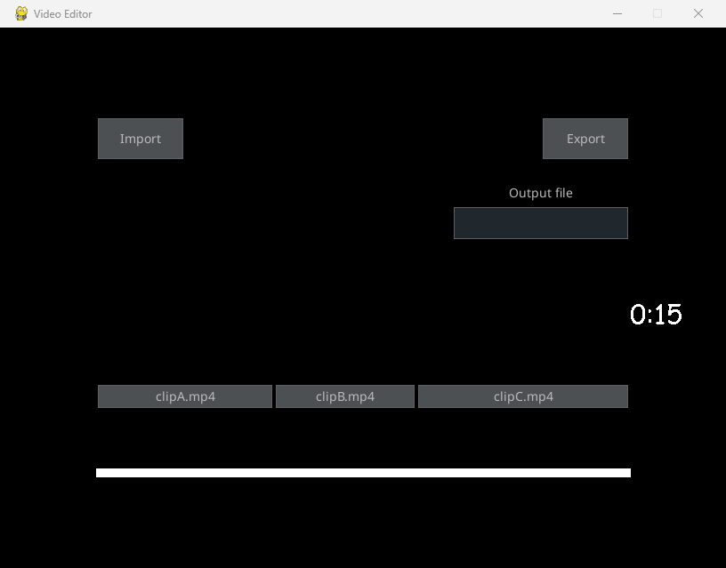

An editing timeline around a Python media engine.
A desktop-style video editor with clip import, timeline controls, effects, and video export.
- My role
- Personal project
- Project year
- 2020
- Evidence
- Runtime evidence
- Built with
- Python · PyGame · pygame_gui · MoviePy

Why build it?
Media libraries provide rendering primitives, but an editor needs interaction: managing clips, ordering them, and starting a long render without freezing the interface.
What I built.
I built a PyGame/pygame_gui interface with import/export controls, timeline operations, fades, text overlays, and a separate rendering thread. It became a foundation for later video automation.
How it works.
- 1
Load clips
Import media into clip objects and place them on a timeline.
- 2
Build the edit
Reorder clips and apply supported effects.
- 3
Render the sequence
Compose the clip outputs and export through MoviePy.
Look at the work.
The screenshot is an existing capture of the actual desktop UI. For this case study, the original Clip and export functions rendered two generated test clips with fades in an isolated folder. The video is that export, not UI interaction.
Decisions & tradeoffs.
Open each note for the implementation boundary, tradeoff, and next engineering question.
01Clip objects separate edits from UI events
The Clip class holds source media and composited elements. Its render method supplies either the source or a composite to the exporter. More complex editing would benefit from an immutable timeline model.
02Background rendering is only a first step
Threading keeps encoding off the event loop, but cancellation, shared state, progress, and error reporting still need design. The broad encoder fallback can obscure a failure’s original cause and should become an explicit export result.
scripts/main.py · scripts/ClipClass.py · scripts/timeline.py · scripts/export.py
What this demonstrates.
Historical editor prototype. The fresh export verifies the media path; new desktop interaction recording was unavailable during capture. Undo, cancellation, and malformed-media handling remain extension points.
Explore the implementation
Explore the source ↗Screenshots and output are evidence of the stated demonstration, not a claim that every feature or failure mode was tested.
Interested in the thinking behind it?
I’m happy to discuss the implementation, its limitations, and how I would develop it further.